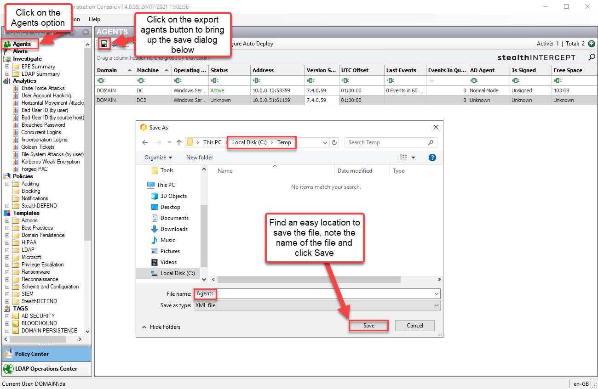

This small tool automates the creation and management of Windows Firewall rules on the StealthINTERCEPT Enterprise Manager server. These rules should only permit access to the Enterprise Manager for StealthINTERCEPT Windows Agents.
Prerequisites
Agent IP Addresses
In order to deploy the firewall rules, you must create a list of all server IP addresses on which a StealthINTERCEPT Windows Agent (Active Directory, Exchange, or File System) is installed. Agent IP addresses may be obtained in one of two ways:
-
Exporting a list of known agents from the StealthINTERCEPT Console


-
Manually collecting IP addresses in a new-line or CSV formatted text file
Required Enterprise Manager Communications
The mitigation tool will create firewall rules to limit access to Enterprise Manager to only StealthINTERCEPT Windows Agents. The ports are as follows:
Version 7.0 and later
| Application | Protocol | Direction | From | To | Ports |
|---|---|---|---|---|---|
| StealthINTERCEPT Enterprise Manager | TCP | Inbound | All Agent IPs | StealthINTERCEPT Enterprise Manager Server | 3739 |
Prior to version 7.0
| Application | Protocol | Direction | From | To | Ports |
|---|---|---|---|---|---|
| StealthINTERCEPT Enterprise Manager | TCP | Inbound | All Agent IPs | StealthINTERCEPT Enterprise Manager Server | 3739 |
| StealthINTERCEPT Agent | TCP | Inbound | StealthINTERCEPT Enterprise Manager Server | StealthINTERCEPT Agent | 3136 |
Using the Mitigation Tool
Obtain the PowerShell Module
Dowlnoad the PowerShell script: SIFirewallRules.
Import the Module
# Importing using Import-Module
Import-Module C:\Temp\SIFirewallRules.ps1
# Importing using . (dot) sourcing
. C:\Temp\SIFirewallRules.ps1
Adding new Firewall Rules
The Add-SIFirewallRules command is used for adding new Windows Firewall rules for the Enterprise Manger. Example syntax:
# Using Agent file exported from console
Add-SIFirewallRules -AgentExportFile C:\Temp\Agents.xml
# Using list of agent IP Addresses with no console installations.
Add-SIFirewallRules -AgentIPs 10.0.0.1, 10.0.0.2, 10.0.0.3
# Using Non-Default ports
Add-SIFirewallRules -AgentExportFile C:\Temp\Agents.xml -AgentInboundPort 8400
# Using a txt file of Agent IPs where the IP Addresses are sperated by new lines
Add-SIFirewallRules -AgentIPs (Get-Content C:\Temp\AgentIPList.txt)
# Using a CSV file of agent IPs where the header for the IP Address column is called IPAddress
Add-SIFirewallRules -AgentIPs (Import-CSV C:\Temp\AgentIPs.csv | Select-Object -Expand IPAddress)
Updating Firewall Rule IPs
The Update-SIFirewallRules can be used to update the Windows Firewall rules created with Add-SIFirewallRules. Without arguments this command replaces the list of IP addresses with a new one. Use the -append switch to cause the specified IP addresses to be added to or the -remove switch to cause the specified IP address to be removed from the rule.
#Examples of use
# Adding a single agent
Update-SIFirewallRules -AgentIPs 10.0.0.2 -Append
# Replacing the Agent IPs with a newly exported file from the StealthINTERCEPT Console
Update-SIFirewallRules -AgentExportFile C:\Temp\Agents_20210812_054023.xml
Removing the Temporary Firewall Rules
The Remove-SIFirewallRules command removes the firewall rules created by the Add-SIFirewallRules command.
# Removing StealthINTERCEPT Firewall Rules
Remove-SIFirewallRules
# If specified the -GroupName parameter in the Add-SIFirewallRules function then use that group name here too
Remove-SIFirewallRules -GroupName "Custom Firewall Group Name"
Disabling and Removing Legacy Firewall Rules
Customers who enabled the creation of Windows Firewall rules during StealthINTERCEPT installation should use the Disable-SIInboundFirewallRules command to remove the legacy rules. By default, the command disables the rules. Provided the optional -remove switch, the command will delete them.
# Disabling the StealthINTERCEPT Firewall Rules
Disable-SIInboundFirewallRules
# Removing the StealthINTERCEPT Firewall Rules
Disable-SIInboundFirewallRules -Remove